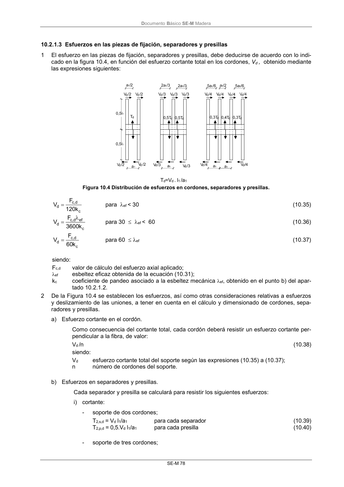

DB-SE-M Madera · edición 2019-12-20 · capa oficial
Documento DB-SE-M-oficial · SHA-256 del PDF 26b5819839ebfda78b0b119c5e76a0a37773b0d763c05688541870075df93718
Página física 84 de 132.
Copia fiel del PDF fuente · Fuente oficial
Ficha de la disposición en la fuente oficial
Formato: Texto de la página (Markdown)
Documento Básico SE-M Madera
SE-M 78
10.2.1.3 Esfuerzos en las piezas de fijación, separadores y presillas
1
El esfuerzo en las piezas de fijación, separadores y presillas, debe deducirse de acuerdo con lo indi-
cado en la figura 10.4, en función del esfuerzo cortante total en los cordones, Vd , obtenido mediante
las expresiones siguientes:
Td=Vd . l1 /a1
Figura 10.4 Distribución de esfuerzos en cordones, separadores y presillas.
c
d
,c
d
k
120
F
V
para ef < 30
(10.35)
c
ef
d
,c
d
k
3600
F
V
para 30 ef < 60
(10.36)
c
d
,c
d
k
60
F
V
para 60 ef
(10.37)
siendo:
Fc,d
valor de cálculo del esfuerzo axial aplicado;
ef
esbeltez eficaz obtenida de la ecuación (10.31);
kc
coeficiente de pandeo asociado a la esbeltez mecánica ef, obtenido en el punto b) del apar-
tado 10.2.1.2.
2
De la Figura 10.4 se establecen los esfuerzos, así como otras consideraciones relativas a esfuerzos
y deslizamiento de las uniones, a tener en cuenta en el cálculo y dimensionado de cordones, sepa-
radores y presillas.
a) Esfuerzo cortante en el cordón.
Como consecuencia del cortante total, cada cordón deberá resistir un esfuerzo cortante per-
pendicular a la fibra, de valor:
Vd /n
(10.38)
siendo:
Vd
esfuerzo cortante total del soporte según las expresiones (10.35) a (10.37);
n
número de cordones del soporte.
b) Esfuerzos en separadores y presillas.
Cada separador y presilla se calculará para resistir los siguientes esfuerzos:
i) cortante:
-
soporte de dos cordones;
T2,s,d = Vd l1/a1
para cada separador
(10.39)
T2,p,d = 0,5.Vd l1/a1
para cada presilla
(10.40)
-
soporte de tres cordones;
